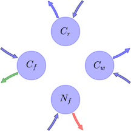

General Overview

This report is the result of the use of the Python 3.4 package Sympy (for symbolic mathematics), as means to translate published models to a common language. It was created by Verónika Ceballos-Núñez (Orcid ID: 0000-0002-0046-1160) on 15/3/2016, and was last modified on lm.
About the model
The model depicted in this document considers carbon allocation with a process based approach. It was originally described by DeAngelis, Ju, Liu, Bryant, & Gourley (2012).
Abstract
We use modeling to determine the optimal relative plant carbonallocations between foliage, fine roots, anti-herbivoredefense, and reproduction to maximize reproductive output. Themodel treats these plant components and the herbivorecompartment as variables. Herbivory is assumed to be purelyfolivory. Key external factors include nutrient availability,degree of shading, and intensity of herbivory. Threealternative functional responses are used for herbivory, two ofwhich are variations on donor-dependent herbivore (models 1aand 1b) and one of which is a Lotka–Volterra type ofinteraction (model 2). All three were modified to include thenegative effect of chemical defenses on the herbivore. Analysisshowed that, for all three models, two stable equilibria couldoccur, which differs from most common functional responses whenno plant defense component is included. Optimal strategies ofcarbon allocation were defined as the maximum biomass ofreproductive propagules produced per unit time, and found tovary with changes in external factors. Increased intensity ofherbivory always led to an increase in the fractionalallocation of carbon to defense. Decreases in availablelimiting nutrient generally led to increasing importance ofdefense. Decreases in available light had little effect ondefense but led to increased allocation to foliage. Decreasesin limiting nutrient and available light led to decreases inallocation to reproduction in models 1a and 1b but not model 2.Increases in allocation to plant defense were usuallyaccompanied by shifts in carbon allocation away from fineroots, possibly because higher plant defense reduced the lossof nutrients to herbivory.
Space Scale
global
Available parameter values
Information on given parameter sets
| Original dataset of the publication |
DeAngelis et al. (2012) |
State Variables
The following table contains the available information regarding this section:
Information on State Variables
| \(C_{f}\) |
Foliage carbon content per unit ground area at equilibrium |
foliage |
\(g\cdot m^{-2}\) |
| \(C_{r}\) |
Fine root carbon |
fine_roots |
\(g\cdot m^{-2}\) |
| \(C_{w}\) |
Carbon in woody tissue |
wood |
\(g\cdot m^{-2}\) |
| \(N_{f}\) |
Nitrogen in foliage |
- |
\(g\cdot m^{-2}\) |
| \(N_{pore}\) |
Soil pore water nutrient pool |
- |
\(gN\cdot g^{-1}water\) |
Additional Variables
The following table contains the available information regarding this section:
Information on Additional Variables
| \(F_{i}\) |
Herbivore functional response |
- |
variable |
\(gN\cdot m^{-2}\cdot day^{-1}\) |
- |
| \(N_{r}\) |
Nitrogen in roots |
- |
variable |
- |
- |
| \(v_{f}\) |
N:C ratio in foliage |
\(v_{f}=\frac{N_{f}}{C_{f}}\) |
variable |
- |
- |
| \(v_{r}\) |
N:C ratio in fine roots |
\(v_{r}=\frac{N_{r}}{C_{r}}\) |
parameter |
- |
\(0.002\) |
| \(N_{w}\) |
Nitrogen in wood |
- |
variable |
- |
- |
| \(v_{w}\) |
N:C ratio in wood |
\(v_{w}=\frac{N_{w}}{C_{w}}\) |
parameter |
- |
\(5.0\cdot 10^{-5}\) |
| \(v_{m}\) |
N:C ratio for reproductive propagules |
- |
parameter |
- |
\(0.005\) |
Photosynthetic Parameters
The following table contains the available information regarding this section:
Information on Photosynthetic Parameters
| \(G_{0}\) |
Maximum possible primary production, assuming all light is captured and photosynthesizing material (foliage) is operating optimally. |
- |
- |
parameter |
- |
\(30\) |
| \(b_{f}\) |
Converts carbon per square meter to LAI |
- |
- |
parameter |
- |
\(0.004\) |
| \(k_{f}\) |
Foliage light-extinction (Beer-Lambert law) coefficient |
- |
- |
parameter |
- |
\(0.2\) |
| \(v_{0}\) |
Half-saturation constant for the effect of foliar nitrogen concentration on primary production |
- |
- |
parameter |
- |
\(0.02\) |
| \(G\) |
Net carbon production or growth per unit time |
\(G=G_{0}\cdot \left(1-\operatorname{exp}\left(- k_{f}\cdot b_{f}\cdot C_{f}\right)\right)\cdot \frac{v_{f}}{v_{0}+v_{f}}\) |
NPP |
variable |
\(gC\cdot m^{-2}\cdot day^{-1}\) |
- |
Nutrient Uptake
The following table contains the available information regarding this section:
Information on Nutrient Uptake
| \(g_{N}\) |
Maximum possible nutrient uptake rate |
- |
- |
- |
\(15\) |
| \(k_{N}\) |
Half-saturation constant for uptake of soil porewater N |
- |
- |
- |
\(5\) |
| \(k_{r}\) |
Coefficient analogous to k\(_f\) |
- |
- |
- |
\(0.15\) |
| \(b_{r}\) |
Coefficient of fine root length per unit C |
- |
- |
- |
\(0.001\) |
| \(U\) |
Nutrient uptake rate of plant available nutrient. Saturated response of uptake to soil porewater concentration is assumed |
\(U=\frac{g_{N}\cdot N_{pore}}{k_{N}+N_{pore}}\cdot \left(1-\operatorname{exp}\left(- k_{r}\cdot b_{r}\cdot C_{r}\right)\right)\) |
variable |
\(gN\cdot m^{-2}\cdot day^{-1}\) |
- |
Allocation fractions
The following table contains the available information regarding this section:
Information on Allocation fractions
| \(s_{f}\) |
Allocation ratio of wood to foliage |
- |
- |
parameter |
\(0.5\) |
| \(s_{r}\) |
Allocation ratio of wood to fine roots |
- |
- |
parameter |
\(0.5\) |
| \(\eta_{f}\) |
Allocation fraction to foliar biomass |
- |
part_foliage |
parameter |
- |
| \(\eta_{r}\) |
Allocation fraction to roots biomass |
- |
part_roots |
parameter |
- |
| \(\eta_{w}\) |
Allocation fraction to wood (in stem, branches and large structurl roots) biomass |
\(\eta_{w}=s_{f}\cdot \eta_{f}+s_{r}\cdot \eta_{r}\) |
part_reproduction |
parameter |
- |
| \(\eta_{m}\) |
Allocation fraction to reproduction |
- |
part_reproduction |
parameter |
- |
| \(\eta_{d}\) |
Allocation fraction to plant defense |
\(\eta_{d}=1-\left(\eta_{f}+\eta_{r}+\eta_{w}+\eta_{m}\right)\) |
part_defense |
parameter |
- |
Cycling Rates
The following table contains the available information regarding this section:
Information on Cycling Rates
| \(\gamma_{f}\) |
Foliage senescence rate |
cyc_foliage |
parameter |
\(day^{-1}\) |
\(0.005\) |
| \(\gamma_{r}\) |
Roots senescence rate |
cyc_roots |
parameter |
\(day^{-1}\) |
\(0.01\) |
| \(\gamma_{w}\) |
Wood senescence rate |
cyc_wood |
parameter |
\(day^{-1}\) |
\(0.001\) |
Components
The following table contains the available information regarding this section:
Information on Components
| \(x\) |
vector of states for vegetation |
\(x=\left[\begin{matrix}C_{f}\\C_{r}\\C_{w}\\N_{f}\end{matrix}\right]\) |
state_vector |
| \(u\) |
scalar function of photosynthetic inputs |
\(u=G\) |
scalar_func_phot |
| \(b\) |
vector of partitioning coefficients of photosynthetically fixed carbon |
\(b=\left[\begin{matrix}\eta_{f}\\\eta_{r}\\\eta_{w}\\-\eta_{m}\cdot v_{m} -\eta_{r}\cdot v_{r} -\eta_{w}\cdot v_{w} +\frac{U}{G}\end{matrix}\right]\) |
part_coeff |
| \(A\) |
matrix of senescence (cycling) rates |
\(A=\left[\begin{matrix}-\frac{F_{i}}{N_{f}} -\gamma_{f} & 0 & 0 & 0\\0 & -\gamma_{r} & 0 & 0\\0 & 0 & -\gamma_{w} & 0\\0 & 0 & 0 & -\frac{F_{i}}{N_{f}} -\gamma_{f}\end{matrix}\right]\) |
cyc_matrix |
| \(f_{v}\) |
the righthandside of the ode |
\(f_{v}=u\cdot b+A\cdot x\) |
state_vector_derivative |
Pool model representation
|
|
Flux description
|

Figure 1: Pool model representation
|
\(C_{f}: \frac{G_{0}\cdot N_{f}\cdot\eta_{f}}{C_{f}\cdot\left(v_{0} +\frac{N_{f}}{C_{f}}\right)}\cdot\left(1 - e^{- C_{f}\cdot b_{f}\cdot k_{f}}\right)\)
\(C_{r}: \frac{G_{0}\cdot N_{f}\cdot\eta_{r}}{C_{f}\cdot\left(v_{0} +\frac{N_{f}}{C_{f}}\right)}\cdot\left(1 - e^{- C_{f}\cdot b_{f}\cdot k_{f}}\right)\)
\(C_{w}: \frac{G_{0}\cdot N_{f}}{C_{f}\cdot\left(v_{0} +\frac{N_{f}}{C_{f}}\right)}\cdot\left(1 - e^{- C_{f}\cdot b_{f}\cdot k_{f}}\right)\cdot\left(\eta_{f}\cdot s_{f} +\eta_{r}\cdot s_{r}\right)\)
\(N_{f}: \frac{G_{0}\cdot N_{f}}{C_{f}\cdot\left(v_{0} +\frac{N_{f}}{C_{f}}\right)}\cdot\left(1 - e^{- C_{f}\cdot b_{f}\cdot k_{f}}\right)\cdot\left(\frac{C_{f}\cdot N_{pore}\cdot g_{N}\cdot\left(1 - e^{- C_{r}\cdot b_{r}\cdot k_{r}}\right)\cdot\left(v_{0} +\frac{N_{f}}{C_{f}}\right)}{G_{0}\cdot N_{f}\cdot\left(1 - e^{- C_{f}\cdot b_{f}\cdot k_{f}}\right)\cdot\left(N_{pore} + k_{N}\right)} -\eta_{m}\cdot v_{m} -\frac{N_{w}}{C_{w}}\cdot\left(\eta_{f}\cdot s_{f} +\eta_{r}\cdot s_{r}\right) -\frac{N_{r}}{C_{r}}\cdot\eta_{r}\right)\)
Output fluxes
\(C_{f}: \frac{C_{f}}{N_{f}}\cdot\left(F_{i} + N_{f}\cdot\gamma_{f}\right)\)
\(C_{r}: C_{r}\cdot\gamma_{r}\)
\(C_{w}: C_{w}\cdot\gamma_{w}\)
\(N_{f}: F_{i} + N_{f}\cdot\gamma_{f}\)
|
The right hand side of the ODE
\(\left[\begin{matrix}C_{f}\cdot\left(-\frac{F_{i}}{N_{f}} -\gamma_{f}\right) +\frac{G_{0}\cdot N_{f}\cdot\eta_{f}}{C_{f}\cdot\left(v_{0} +\frac{N_{f}}{C_{f}}\right)}\cdot\left(1 - e^{- C_{f}\cdot b_{f}\cdot k_{f}}\right)\\- C_{r}\cdot\gamma_{r} +\frac{G_{0}\cdot N_{f}\cdot\eta_{r}}{C_{f}\cdot\left(v_{0} +\frac{N_{f}}{C_{f}}\right)}\cdot\left(1 - e^{- C_{f}\cdot b_{f}\cdot k_{f}}\right)\\- C_{w}\cdot\gamma_{w} +\frac{G_{0}\cdot N_{f}}{C_{f}\cdot\left(v_{0} +\frac{N_{f}}{C_{f}}\right)}\cdot\left(1 - e^{- C_{f}\cdot b_{f}\cdot k_{f}}\right)\cdot\left(\eta_{f}\cdot s_{f} +\eta_{r}\cdot s_{r}\right)\\N_{f}\cdot\left(-\frac{F_{i}}{N_{f}} -\gamma_{f}\right) +\frac{G_{0}\cdot N_{f}}{C_{f}\cdot\left(v_{0} +\frac{N_{f}}{C_{f}}\right)}\cdot\left(1 - e^{- C_{f}\cdot b_{f}\cdot k_{f}}\right)\cdot\left(\frac{C_{f}\cdot N_{pore}\cdot g_{N}\cdot\left(1 - e^{- C_{r}\cdot b_{r}\cdot k_{r}}\right)\cdot\left(v_{0} +\frac{N_{f}}{C_{f}}\right)}{G_{0}\cdot N_{f}\cdot\left(1 - e^{- C_{f}\cdot b_{f}\cdot k_{f}}\right)\cdot\left(N_{pore} + k_{N}\right)} -\eta_{m}\cdot v_{m} -\frac{N_{w}}{C_{w}}\cdot\left(\eta_{f}\cdot s_{f} +\eta_{r}\cdot s_{r}\right) -\frac{N_{r}}{C_{r}}\cdot\eta_{r}\right)\end{matrix}\right]\)
The Jacobian (derivative of the ODE w.r.t. state variables)
\(\left[\begin{matrix}-\frac{F_{i}}{N_{f}} -\gamma_{f} +\frac{G_{0}\cdot N_{f}\cdot b_{f}\cdot\eta_{f}\cdot k_{f}}{C_{f}\cdot\left(v_{0} +\frac{N_{f}}{C_{f}}\right)}\cdot e^{- C_{f}\cdot b_{f}\cdot k_{f}} -\frac{G_{0}\cdot N_{f}\cdot\eta_{f}}{C_{f}^{2}\cdot\left(v_{0} +\frac{N_{f}}{C_{f}}\right)}\cdot\left(1 - e^{- C_{f}\cdot b_{f}\cdot k_{f}}\right) +\frac{G_{0}\cdot N_{f}^{2}\cdot\eta_{f}}{C_{f}^{3}\cdot\left(v_{0} +\frac{N_{f}}{C_{f}}\right)^{2}}\cdot\left(1 - e^{- C_{f}\cdot b_{f}\cdot k_{f}}\right) & 0 & 0 &\frac{C_{f}}{N_{f}^{2}}\cdot F_{i} +\frac{G_{0}\cdot\eta_{f}}{C_{f}\cdot\left(v_{0} +\frac{N_{f}}{C_{f}}\right)}\cdot\left(1 - e^{- C_{f}\cdot b_{f}\cdot k_{f}}\right) -\frac{G_{0}\cdot N_{f}\cdot\eta_{f}}{C_{f}^{2}\cdot\left(v_{0} +\frac{N_{f}}{C_{f}}\right)^{2}}\cdot\left(1 - e^{- C_{f}\cdot b_{f}\cdot k_{f}}\right)\\\frac{G_{0}\cdot N_{f}\cdot b_{f}\cdot\eta_{r}\cdot k_{f}}{C_{f}\cdot\left(v_{0} +\frac{N_{f}}{C_{f}}\right)}\cdot e^{- C_{f}\cdot b_{f}\cdot k_{f}} -\frac{G_{0}\cdot N_{f}\cdot\eta_{r}}{C_{f}^{2}\cdot\left(v_{0} +\frac{N_{f}}{C_{f}}\right)}\cdot\left(1 - e^{- C_{f}\cdot b_{f}\cdot k_{f}}\right) +\frac{G_{0}\cdot N_{f}^{2}\cdot\eta_{r}}{C_{f}^{3}\cdot\left(v_{0} +\frac{N_{f}}{C_{f}}\right)^{2}}\cdot\left(1 - e^{- C_{f}\cdot b_{f}\cdot k_{f}}\right) & -\gamma_{r} & 0 &\frac{G_{0}\cdot\eta_{r}}{C_{f}\cdot\left(v_{0} +\frac{N_{f}}{C_{f}}\right)}\cdot\left(1 - e^{- C_{f}\cdot b_{f}\cdot k_{f}}\right) -\frac{G_{0}\cdot N_{f}\cdot\eta_{r}}{C_{f}^{2}\cdot\left(v_{0} +\frac{N_{f}}{C_{f}}\right)^{2}}\cdot\left(1 - e^{- C_{f}\cdot b_{f}\cdot k_{f}}\right)\\\frac{G_{0}\cdot N_{f}\cdot b_{f}\cdot k_{f}}{C_{f}\cdot\left(v_{0} +\frac{N_{f}}{C_{f}}\right)}\cdot\left(\eta_{f}\cdot s_{f} +\eta_{r}\cdot s_{r}\right)\cdot e^{- C_{f}\cdot b_{f}\cdot k_{f}} -\frac{G_{0}\cdot N_{f}}{C_{f}^{2}\cdot\left(v_{0} +\frac{N_{f}}{C_{f}}\right)}\cdot\left(1 - e^{- C_{f}\cdot b_{f}\cdot k_{f}}\right)\cdot\left(\eta_{f}\cdot s_{f} +\eta_{r}\cdot s_{r}\right) +\frac{G_{0}\cdot N_{f}^{2}}{C_{f}^{3}\cdot\left(v_{0} +\frac{N_{f}}{C_{f}}\right)^{2}}\cdot\left(1 - e^{- C_{f}\cdot b_{f}\cdot k_{f}}\right)\cdot\left(\eta_{f}\cdot s_{f} +\eta_{r}\cdot s_{r}\right) & 0 & -\gamma_{w} &\frac{G_{0}}{C_{f}\cdot\left(v_{0} +\frac{N_{f}}{C_{f}}\right)}\cdot\left(1 - e^{- C_{f}\cdot b_{f}\cdot k_{f}}\right)\cdot\left(\eta_{f}\cdot s_{f} +\eta_{r}\cdot s_{r}\right) -\frac{G_{0}\cdot N_{f}}{C_{f}^{2}\cdot\left(v_{0} +\frac{N_{f}}{C_{f}}\right)^{2}}\cdot\left(1 - e^{- C_{f}\cdot b_{f}\cdot k_{f}}\right)\cdot\left(\eta_{f}\cdot s_{f} +\eta_{r}\cdot s_{r}\right)\\\frac{G_{0}\cdot N_{f}\cdot b_{f}\cdot k_{f}}{C_{f}\cdot\left(v_{0} +\frac{N_{f}}{C_{f}}\right)}\cdot\left(\frac{C_{f}\cdot N_{pore}\cdot g_{N}\cdot\left(1 - e^{- C_{r}\cdot b_{r}\cdot k_{r}}\right)\cdot\left(v_{0} +\frac{N_{f}}{C_{f}}\right)}{G_{0}\cdot N_{f}\cdot\left(1 - e^{- C_{f}\cdot b_{f}\cdot k_{f}}\right)\cdot\left(N_{pore} + k_{N}\right)} -\eta_{m}\cdot v_{m} -\frac{N_{w}}{C_{w}}\cdot\left(\eta_{f}\cdot s_{f} +\eta_{r}\cdot s_{r}\right) -\frac{N_{r}}{C_{r}}\cdot\eta_{r}\right)\cdot e^{- C_{f}\cdot b_{f}\cdot k_{f}} +\frac{G_{0}\cdot N_{f}}{C_{f}\cdot\left(v_{0} +\frac{N_{f}}{C_{f}}\right)}\cdot\left(1 - e^{- C_{f}\cdot b_{f}\cdot k_{f}}\right)\cdot\left(-\frac{C_{f}\cdot N_{pore}\cdot b_{f}\cdot g_{N}\cdot k_{f}\cdot\left(1 - e^{- C_{r}\cdot b_{r}\cdot k_{r}}\right)\cdot\left(v_{0} +\frac{N_{f}}{C_{f}}\right)\cdot e^{- C_{f}\cdot b_{f}\cdot k_{f}}}{G_{0}\cdot N_{f}\cdot\left(1 - e^{- C_{f}\cdot b_{f}\cdot k_{f}}\right)^{2}\cdot\left(N_{pore} + k_{N}\right)} +\frac{N_{pore}\cdot g_{N}\cdot\left(1 - e^{- C_{r}\cdot b_{r}\cdot k_{r}}\right)\cdot\left(v_{0} +\frac{N_{f}}{C_{f}}\right)}{G_{0}\cdot N_{f}\cdot\left(1 - e^{- C_{f}\cdot b_{f}\cdot k_{f}}\right)\cdot\left(N_{pore} + k_{N}\right)} -\frac{N_{pore}\cdot g_{N}\cdot\left(1 - e^{- C_{r}\cdot b_{r}\cdot k_{r}}\right)}{C_{f}\cdot G_{0}\cdot\left(1 - e^{- C_{f}\cdot b_{f}\cdot k_{f}}\right)\cdot\left(N_{pore} + k_{N}\right)}\right) -\frac{G_{0}\cdot N_{f}}{C_{f}^{2}\cdot\left(v_{0} +\frac{N_{f}}{C_{f}}\right)}\cdot\left(1 - e^{- C_{f}\cdot b_{f}\cdot k_{f}}\right)\cdot\left(\frac{C_{f}\cdot N_{pore}\cdot g_{N}\cdot\left(1 - e^{- C_{r}\cdot b_{r}\cdot k_{r}}\right)\cdot\left(v_{0} +\frac{N_{f}}{C_{f}}\right)}{G_{0}\cdot N_{f}\cdot\left(1 - e^{- C_{f}\cdot b_{f}\cdot k_{f}}\right)\cdot\left(N_{pore} + k_{N}\right)} -\eta_{m}\cdot v_{m} -\frac{N_{w}}{C_{w}}\cdot\left(\eta_{f}\cdot s_{f} +\eta_{r}\cdot s_{r}\right) -\frac{N_{r}}{C_{r}}\cdot\eta_{r}\right) +\frac{G_{0}\cdot N_{f}^{2}}{C_{f}^{3}\cdot\left(v_{0} +\frac{N_{f}}{C_{f}}\right)^{2}}\cdot\left(1 - e^{- C_{f}\cdot b_{f}\cdot k_{f}}\right)\cdot\left(\frac{C_{f}\cdot N_{pore}\cdot g_{N}\cdot\left(1 - e^{- C_{r}\cdot b_{r}\cdot k_{r}}\right)\cdot\left(v_{0} +\frac{N_{f}}{C_{f}}\right)}{G_{0}\cdot N_{f}\cdot\left(1 - e^{- C_{f}\cdot b_{f}\cdot k_{f}}\right)\cdot\left(N_{pore} + k_{N}\right)} -\eta_{m}\cdot v_{m} -\frac{N_{w}}{C_{w}}\cdot\left(\eta_{f}\cdot s_{f} +\eta_{r}\cdot s_{r}\right) -\frac{N_{r}}{C_{r}}\cdot\eta_{r}\right) &\frac{G_{0}\cdot N_{f}}{C_{f}\cdot\left(v_{0} +\frac{N_{f}}{C_{f}}\right)}\cdot\left(1 - e^{- C_{f}\cdot b_{f}\cdot k_{f}}\right)\cdot\left(\frac{C_{f}\cdot N_{pore}\cdot b_{r}\cdot g_{N}\cdot k_{r}\cdot\left(v_{0} +\frac{N_{f}}{C_{f}}\right)\cdot e^{- C_{r}\cdot b_{r}\cdot k_{r}}}{G_{0}\cdot N_{f}\cdot\left(1 - e^{- C_{f}\cdot b_{f}\cdot k_{f}}\right)\cdot\left(N_{pore} + k_{N}\right)} +\frac{N_{r}}{C_{r}^{2}}\cdot\eta_{r}\right) &\frac{G_{0}\cdot N_{f}\cdot N_{w}}{C_{f}\cdot C_{w}^{2}\cdot\left(v_{0} +\frac{N_{f}}{C_{f}}\right)}\cdot\left(1 - e^{- C_{f}\cdot b_{f}\cdot k_{f}}\right)\cdot\left(\eta_{f}\cdot s_{f} +\eta_{r}\cdot s_{r}\right) & -\gamma_{f} +\frac{G_{0}\cdot N_{f}}{C_{f}\cdot\left(v_{0} +\frac{N_{f}}{C_{f}}\right)}\cdot\left(1 - e^{- C_{f}\cdot b_{f}\cdot k_{f}}\right)\cdot\left(-\frac{C_{f}\cdot N_{pore}\cdot g_{N}\cdot\left(1 - e^{- C_{r}\cdot b_{r}\cdot k_{r}}\right)\cdot\left(v_{0} +\frac{N_{f}}{C_{f}}\right)}{G_{0}\cdot N_{f}^{2}\cdot\left(1 - e^{- C_{f}\cdot b_{f}\cdot k_{f}}\right)\cdot\left(N_{pore} + k_{N}\right)} +\frac{N_{pore}\cdot g_{N}\cdot\left(1 - e^{- C_{r}\cdot b_{r}\cdot k_{r}}\right)}{G_{0}\cdot N_{f}\cdot\left(1 - e^{- C_{f}\cdot b_{f}\cdot k_{f}}\right)\cdot\left(N_{pore} + k_{N}\right)}\right) +\frac{G_{0}}{C_{f}\cdot\left(v_{0} +\frac{N_{f}}{C_{f}}\right)}\cdot\left(1 - e^{- C_{f}\cdot b_{f}\cdot k_{f}}\right)\cdot\left(\frac{C_{f}\cdot N_{pore}\cdot g_{N}\cdot\left(1 - e^{- C_{r}\cdot b_{r}\cdot k_{r}}\right)\cdot\left(v_{0} +\frac{N_{f}}{C_{f}}\right)}{G_{0}\cdot N_{f}\cdot\left(1 - e^{- C_{f}\cdot b_{f}\cdot k_{f}}\right)\cdot\left(N_{pore} + k_{N}\right)} -\eta_{m}\cdot v_{m} -\frac{N_{w}}{C_{w}}\cdot\left(\eta_{f}\cdot s_{f} +\eta_{r}\cdot s_{r}\right) -\frac{N_{r}}{C_{r}}\cdot\eta_{r}\right) -\frac{G_{0}\cdot N_{f}}{C_{f}^{2}\cdot\left(v_{0} +\frac{N_{f}}{C_{f}}\right)^{2}}\cdot\left(1 - e^{- C_{f}\cdot b_{f}\cdot k_{f}}\right)\cdot\left(\frac{C_{f}\cdot N_{pore}\cdot g_{N}\cdot\left(1 - e^{- C_{r}\cdot b_{r}\cdot k_{r}}\right)\cdot\left(v_{0} +\frac{N_{f}}{C_{f}}\right)}{G_{0}\cdot N_{f}\cdot\left(1 - e^{- C_{f}\cdot b_{f}\cdot k_{f}}\right)\cdot\left(N_{pore} + k_{N}\right)} -\eta_{m}\cdot v_{m} -\frac{N_{w}}{C_{w}}\cdot\left(\eta_{f}\cdot s_{f} +\eta_{r}\cdot s_{r}\right) -\frac{N_{r}}{C_{r}}\cdot\eta_{r}\right)\end{matrix}\right]\)
References
DeAngelis, D. L., Ju, S., Liu, R., Bryant, J. P., & Gourley, S. A. (2012). Plant allocation of carbon to defense as a function of herbivory, light and nutrient availability. Theoretical Ecology, 5(3), 445–456. http://doi.org/10.1007/s12080-011-0135-z